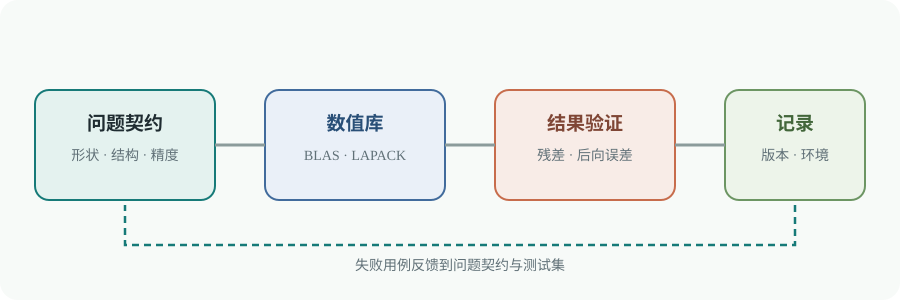

CHAPTER 1 · ENGINEERING NUMERICAL SOFTWARE
如何构建可信的数值计算软件
把数学假设、软件接口、测试和性能放在同一张设计图里。
一个数值程序不只需要实现公式。它还要定义输入契约、处理异常数据、选择合适的算法、检查结果质量，并在不同机器和软件版本下保持可复现。工程质量是数值可信度的一部分。
- 知道何时使用成熟数值库而不是自行实现算法。
- 区分求解接口与显式求逆。
- 建立输入检查、数值验证和可复现报告流程。

1. 软件选择的三个维度
数值软件常在易用性、可靠性和速度之间权衡。成熟库通常经过大量测试和针对硬件的优化；交互式环境适合探索与原型；自定义代码适合研究新算法或表达特殊结构，但需要承担更多测试与维护责任。
选择软件前先描述问题：矩阵大小、稠密/稀疏、对称性、正定性、精度、内存预算、调用次数和目标平台。一个只求解一次的小问题，优先使用成熟接口往往比自己写 LU 更省时也更可靠。
2. 让库负责底层数值内核
BLAS 提供向量与矩阵的基础运算，LAPACK 在其上提供线性系统、最小二乘、特征值和奇异值等算法。NumPy 的线性代数接口在可用时依赖 BLAS/LAPACK；SciPy 进一步提供更多分解与矩阵函数。MATLAB 的 A\\b 接口会按矩阵形状和结构选择求解路径。
求解 Ax=b 时，通常使用 solve 或左除接口，而不是先计算 A⁻¹ 再乘 b。显式求逆会计算出一个更大的中间对象，增加工作量和误差传播机会；若目标只是求解线性系统，直接求解接口表达得更准确。
3. 把数值检查写进程序契约
输入检查包括形状、数据类型、有限值、矩阵结构和单位/尺度；输出检查包括残差、后向误差、正交性、重构误差或约束违背量。对病态问题，还应估计条件数，并解释误差为何可能被放大。
测试集不应只有随机良态矩阵。还要覆盖零矩阵、奇异矩阵、近奇异矩阵、极端尺度、重复奇异值、复数输入和边界维度。对每个测试，明确预期异常、允许误差和可重复随机种子。
4. 记录可复现性与版本
性能结果必须记录硬件、操作系统、Python/MATLAB 版本、BLAS 实现、线程数、数据类型、矩阵规模、随机种子和容差。相同代码在不同 BLAS、不同线程数或不同精度下可能有不同的运行时间和最后几位结果。
数值软件的交付物不仅是函数，还包括 API 契约、错误处理、测试、依赖版本、基准方法和已知限制。对于科学计算，能解释结果为何可信，比单纯给出一个数字更重要。
交互检查：不同任务应该调用什么工具？
选择实际任务，查看推荐的接口层级。
先调用成熟的求解接口，再决定是否需要自定义算法。
参考资料
- LAPACK project and Users' Guidenumerical library scope
- NumPy linear algebra documentationBLAS/LAPACK backend and interfaces
- MATLAB systems of linear equationsmatrix left division and system types
- James W. Demmel, Applied Numerical Linear Algebra, Chapter 1 §1.3.5numerical software engineering